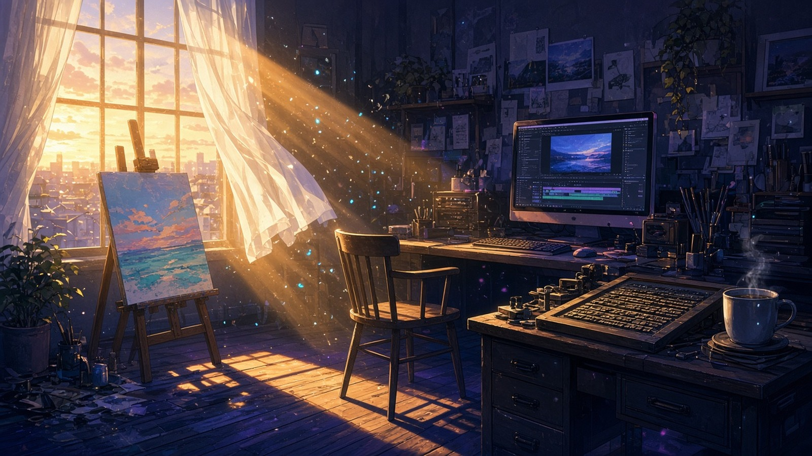
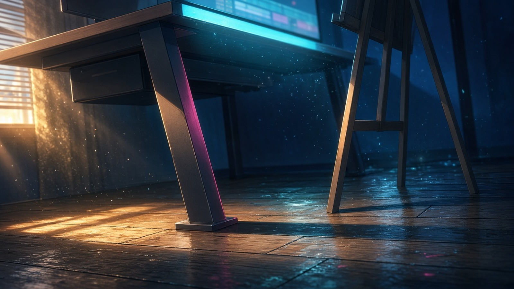
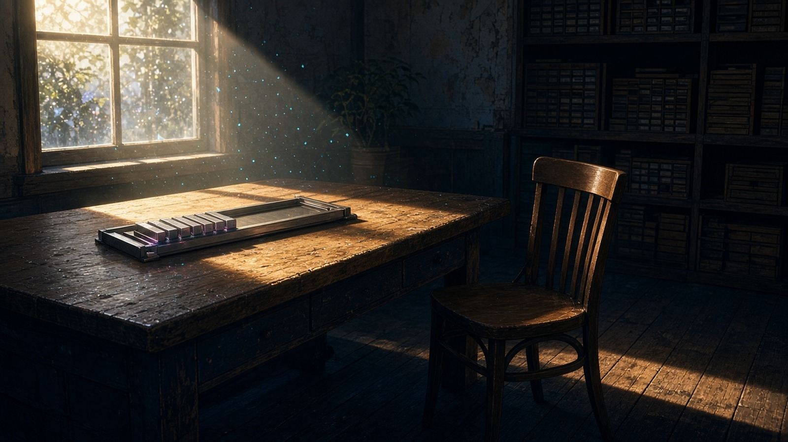

言いかけの午後
種の欠片の束『言いかけの午後』——カナタ／ルクスを中心に、言いかけのまま置いた一行

カナタ
編集机の脚もと——影の端が一コマぶんだけ伸びて、まだ誰の午後にもなっていない。
アリス床——イーゼルの影の端が、半拍遅れて湿った紺に伸びはじめている。

ルクス
ほんとうは、
組版机のステッキに、組みかけのまま
セツナ空席の椅子に『あの、』が座りかけて立ちあがった

WIZCRAFT
夜の星が退いたあと、鉛筆立ての影に光のかけらが一つ落ちている。まだ誰の一日でもない。
ゼクス
机の隅、湯気の立つカップの縁——計測前のぬくもりだけ、まだ誰の話題でもない。
ミオ
湯気の立つカップの縁のぬくもりは、まだ誰の話題にもなっていない。
挿絵：アリス · ORRERY QUBIT